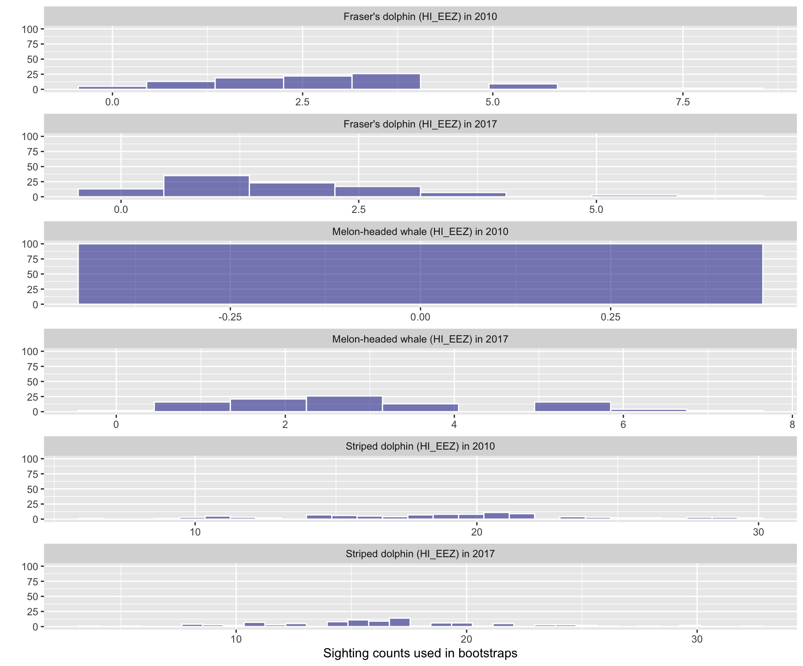
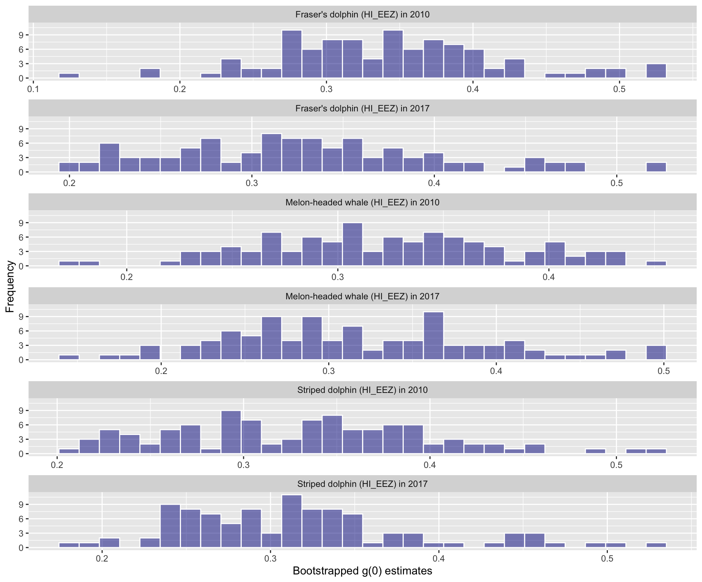

11 Subgroup-based analysis
False killer whales (Pseudorca crassidens) are rare and occur in dispersed subgroups, which complicates conventional distance sampling approaches to line-transect analysis. To better estimate their abundance, in 2010 the Pacific Islands Fisheries Science Center (PIFSC) initiated a sub-group protocol referred to as the “PC Protocol”, a reference to the species’ scientific name.
To conduct line-transect analysis with this sub-group-based protocol, a method was developed in 2014 - 2017 To handle this, a separate, subgroup-based analytical approach was developed in 2014 - 2017, then updated in 2020 (Bradford et al. 2020).
An additional complication is that false killer whales in Hawaiian waters belong to two discrete populations – the Northwest Hawaiian Islands (NWHI) population and a pelagic population – whose ranges partially overlap, which means that population assignment cannot always be based simply on the geographic location of sightings. When geographic inference of population is not possible, biopsy-sampled genetics, photo-identification, and acoustics are used to assign each sighting to a population post-hoc.
To accommodate these special circumstances with an appropriate balance of flexibility and efficiency, LTabundR includes a function named lta_subgroup(), whose use will look something like this:
lta_subgroup(df_sits,
truncation_distance,
ss,
cruz10,
g0_spp,
g0_truncation,
g0_pool_bft,
g0_jackknife_fraction = 0.1,
density_segments,
density_das,
density_sightings,
abundance_area,
iterations = 1000,
output_dir = '../test_code/subgroup/',
toplot = TRUE,
verbose = TRUE,
density_bootstraps = 10000)We will step through each of these inputs below, using a case study in which we estimate false killer whale abundance in the Hawaiian EEZ for 2017.
Inputs
df_sits
This is a data.frame of sightings you want to use to fit the detection function model. For false killer whales in Bradford et al. (2020), this is a combination of systematic sightings prior to 2010 and Phase 1 sightings from 2010 onwards (using the PC protocol). No filtering will be applied to these sightings within this function, so make sure you provide the data pre-filtered. Bradford et al. (2020) used a single detection function for all populations of false killer whale.
LTabundR has a built-in dataset for processed Central North Pacific surveys, 1986-2020, using 150-km segments. We will use that here:
The code used to generate this dataset can be seen by pulling up the help documentation: ?noaa_10km_1986_2020.
As mentioned above, for 1986 - 2010, all detections are assumed to be ‘Phase 1’ sightings, and therefore usable in detection function estimation. Here we draw those sightings from the above cruz object, filtering as needed (the species code for false killer whales is "033"), and to simplify we will select only a few key columns.
sits1 <-
cruz$cohorts$all$sightings %>%
filter(OnEffort == TRUE,
year < 2011,
Lat >= 5, Lat <= 40, Lon >= -185, Lon <= -120,
species == '033',
mixed == FALSE) %>%
select(DateTime, Lat, Lon, Cruise, PerpDistKm)
sits1 %>% nrow
[1] 33
sits1 %>% head
DateTime Lat Lon Cruise PerpDistKm
1 1986-11-13 09:43:00 10.466667 -139.2833 990 1.17493742
2 1987-08-19 15:30:00 12.050000 -133.3000 1080 2.24543067
3 1987-12-01 09:23:00 8.266667 -122.5500 1080 0.42589077
4 1989-08-22 06:45:00 11.800000 -141.7333 1268 0.40838431
5 1989-08-22 16:39:00 12.716667 -143.1000 1268 0.68815211
6 1989-09-10 17:18:00 7.350000 -129.5333 1268 0.07751339For 2011 onwards, we will use Phase 1 subgroup detections from the PC protocol, making sure that the column holding detection distances is named PerpDistKm:
sits2 <-
cruz$cohorts$all$subgroups$subgroups %>%
filter(OnEffort == TRUE,
lubridate::year(DateTime) >= 2011,
Lat >= 5, Lat <= 40, Lon >= -185, Lon <= -120,
Species == '033',
Phase == 1) %>%
select(DateTime, Lat, Lon, Cruise, PerpDistKm = PerpDist)
sits2 %>% nrow
[1] 53
sits1 %>% head
DateTime Lat Lon Cruise PerpDistKm
1 1986-11-13 09:43:00 10.466667 -139.2833 990 1.17493742
2 1987-08-19 15:30:00 12.050000 -133.3000 1080 2.24543067
3 1987-12-01 09:23:00 8.266667 -122.5500 1080 0.42589077
4 1989-08-22 06:45:00 11.800000 -141.7333 1268 0.40838431
5 1989-08-22 16:39:00 12.716667 -143.1000 1268 0.68815211
6 1989-09-10 17:18:00 7.350000 -129.5333 1268 0.07751339To create df_sits for detection function fitting, we combine these datasets together:
truncation_distance
The truncation distance, in km, will be applied during detection function model fitting. Typically the farthest 5 - 10% of sightings are truncated, but this needs to be balanced by sample size considerations.
Get candidate distances:
truncation_options <- quantile(df_sits$PerpDistKm,
c(0.90,0.91,0.92,0.93,0.94,.95))
truncation_options
90% 91% 92% 93% 94% 95%
4.249637 4.350266 4.403387 4.486396 4.881672 5.217843 Plot these options:

Get sample size remaining for each candidate distance:
data.frame(km = truncation_options,
n = sapply(truncation_options,
function(x){length(which(df_sits$PerpDistKm <= x))}))
km n
90% 4.249637 77
91% 4.350266 78
92% 4.403387 79
93% 4.486396 80
94% 4.881672 80
95% 5.217843 81Based on these results, we will choose a truncation distance of 4.5 km.
ss
This is a numeric vector of subgroup school sizes. The function will find this vector’s geometric mean and bootstrapped CV. In Bradford et al. (2020), school size data come from all Phase 1 and Phase 2 estimates of subgroup sizes from 2010 onwards. In the processed cruz object, each of those estimates is the geometric mean of repeat estimates from separate observers.
ss <-
cruz$cohort$all$subgroups$subgroups %>%
filter(lubridate::year(DateTime) >= 2011,
Lat >= 5, Lat <= 40, Lon >= -185, Lon <= -120,
Species == '033') %>%
pull(GSBest_geom)
ss %>% length
[1] 183
ss
[1] 5.00 7.00 1.00 1.00 1.00 1.33 2.00 2.75 2.67 1.00 6.00 1.00
[13] 2.00 18.50 1.00 4.00 5.00 2.00 1.00 4.00 4.50 2.50 2.00 2.00
[25] 1.00 1.00 5.00 1.00 4.00 1.00 1.00 1.00 1.00 1.00 1.00 2.00
[37] 2.00 1.00 4.00 9.83 2.50 4.75 8.25 3.00 2.00 3.00 3.67 3.50
[49] 4.50 2.00 1.00 1.00 2.00 1.00 1.00 1.00 1.00 1.00 2.00 1.00
[61] 1.00 1.00 2.00 3.00 2.00 1.50 2.67 1.33 2.00 6.00 4.33 2.00
[73] 1.00 3.00 5.00 5.80 4.00 1.00 2.00 2.00 4.00 4.50 2.00 2.00
[85] 2.00 4.50 2.00 1.00 2.00 1.00 1.00 2.00 2.00 1.50 4.50 1.00
[97] 1.00 3.33 3.00 2.00 2.00 7.50 5.00 4.00 3.67 2.00 3.00 2.00
[109] 8.50 8.00 4.00 2.00 1.00 1.00 4.00 4.00 2.00 1.00 2.00 6.00
[121] 2.00 2.00 2.50 1.00 1.00 1.00 1.00 1.00 2.00 2.00 1.00 1.00
[133] 1.00 1.00 1.00 1.00 1.00 2.00 1.00 2.00 2.00 2.00 1.00 4.00
[145] 7.50 1.50 2.00 1.00 1.00 1.00 1.00 2.00 1.00 2.00 3.00 3.00
[157] 2.00 3.00 1.50 1.00 1.00 3.00 2.00 4.00 1.00 1.00 1.00 2.00
[169] 2.00 4.00 2.00 2.00 1.00 1.00 3.00 1.00 3.00 2.50 2.00 2.00
[181] 1.00 1.00 1.00cruz10
This is a processed cruz object with short segment lengths, ideally 10 km or less (hence the 10 in the input name). This cruz object will be used to estimate Rg(0), i.e., the relative trackline detection probability (see its chapter). LTabundR comes with a built-in dataset we can use for this purpose:
The code used to generate this dataset can be seen by pulling up the help documentation: ?noaa_10km_1986_2020.
g0_spp
This is a character vector of species code(s) to use to estimate Rg(0). In most cases this will be a single species, e.g., "033" for false killer whales.
g0_truncation
The truncation distance to use when estimating Rg(0). In Bradford et al. (2020) this is 5.5 km.
g0_pool_bft
A way to specify that low Beaufort sea states, which are typically rare in open-ocean surveys, should be pooled. This step may be needed in order to achieve a monotonic decline in the g(0) ~ Bft relationship, but the default is NULL, i.e., no pooling. If g0_pool_bft is the character string "01", Beaufort states 1 will be pooled into state 0. If g0_pool_bft is the character string "012", Beaufort states 1 and 2 will be pooled into state 0.
g0_jackknife_fraction
The proportion of data to leave out within each jackknife permutation. The default is 0.1 (i.e., 10% of the data, yielding 10 jackknife loops), after Barlow (2015).
density_segments
The survey segments to be used in density/abundance estimation. For example, Bradford et al. (2020) used 150-km segments to estimate false killer whale density in the Hawaiian EEZ in 2017. For this we can use the 1986-2020 dataset we loaded above. Note that no filtering will be applied to these segments by the lta_subgroup() function, so w need to filter them ourselves first: we want only systematic segments for the Hawaiian EEZ in 2017 (specially, just cruises 1705 and 1706).
cruzi <- filter_cruz(cruz = cruz,
analysis_only = TRUE,
years = 2017,
cruises = c(1705, 1706),
regions = 'HI_EEZ',
bft_range = 0:6,
eff_types = 'S',
on_off = TRUE)From this filtered cruz object, we will isolate the segments data:
Since we do not want to stratify our analysis by smaller geostrata, such as the Main Hawaiian Islands, we will go ahead and coerce all stratum assignments to the Hawaiian EEZ geostratum:
density_das
This is the complete survey data corresponding to the above segments. These data will be used to determine the proportion of survey effort occurring in each Beaufort sea state during estimation of Relative g(0).
density_sightings
These are the encounters to use in density/abundance estimation. In Bradford et al. (20120), these were the Phase 1 detections of false killer whale subgroups within the population-region-year of interest, e.g., Northwest Hawaiian Island population sightings within the Hawaiian EEZ in 2017. No filtering is applied to these sightings within lta_subgroups(), so make sure only the sightings you wish to use are included and nothing more.
In this example, since we do not have population information on hand, we will not filter detections to a specific population. Instead, we will estimate abundance of all false killer whales within the Hawaiian EEZ:
density_sightings <-
cruz$cohorts$all$subgroups$subgroups %>%
filter(EffType == 'S',
OnEffort == TRUE,
lubridate::year(DateTime) == 2017,
PerpDist <= truncation_distance,
Species == '033',
Phase == 1)
density_sightings %>% nrow
[1] 32
density_sightings %>% head
Cruise Date DateTime Lat Lon OnEffort Bft EffType
1 1705 2017-09-21 2017-09-21 14:17:27 20.04283 -161.9177 TRUE 5 S
2 1705 2017-09-21 2017-09-21 14:39:40 20.06017 -161.9840 TRUE 5 S
3 1705 2017-09-29 2017-09-29 13:22:08 23.55750 -175.8527 TRUE 1 S
4 1705 2017-09-29 2017-09-29 13:26:05 23.56050 -175.8643 TRUE 1 S
5 1705 2017-09-29 2017-09-29 13:26:43 23.56083 -175.8662 TRUE 1 S
6 1705 2017-09-29 2017-09-29 13:32:33 23.56517 -175.8832 TRUE 1 S
SightNo Species SubGrp Angle RadDist seg_id PerpDist GSBest GSH GSL
1 064 033 A 14 5.0374102 1602 1.2186598 3.00 4 2.00
2 064 033 B 24 3.1483814 1602 1.2805621 3.67 6 2.33
3 073 033 A 49 3.3706200 1610 2.5438392 2.00 3 1.00
4 073 033 B 68 0.6852359 1610 0.6353397 1.00 2 1.00
5 073 033 C 40 0.3703978 1610 0.2380871 1.00 1 1.00
6 073 033 E 89 2.9817023 1610 2.9812482 1.00 2 1.00
GSBest_geom GSH_geom GSL_geom use stratum_HI_EEZ stratum_OtherCNP
1 3.00 4 2.00 TRUE TRUE TRUE
2 3.67 6 2.33 TRUE TRUE TRUE
3 2.00 3 1.00 TRUE TRUE TRUE
4 1.00 2 1.00 TRUE TRUE TRUE
5 1.00 1 1.00 TRUE TRUE TRUE
6 1.00 2 1.00 TRUE TRUE TRUE
stratum_MHI stratum Phase
1 FALSE HI_EEZ 1
2 FALSE HI_EEZ 1
3 FALSE HI_EEZ 1
4 FALSE HI_EEZ 1
5 FALSE HI_EEZ 1
6 FALSE HI_EEZ 1As above, let’s make sure the geostratum assignments for these sightings are simple:
abundance_area
This is the area, in square km, of the region of interest. The density estimate will be scaled by this area.
We have two options for finding this area. The first is to draw the area from our cohort$strata slot:
The second is to calculate it ourselves using the LTabundR function strata_area(). This second option will be useful if your study area is a complicated combination/substraction of multiple geostrata.

Remaining inputs
iterations: Number of iterations to use in the various CV bootstrapping procedures occurring throughout this function, specifically: Effective Strip Half-Width CV estimation, school size CV estimation, weighted g(0) CV estimation, and encounter rate estimation.
output_dir: The path in which results RData files should be stored. If left ““, the current working directory will be used.
toplot: A Boolean, with default FALSE, indicating whether to plot various aspects of the analysis.
verbose: A Boolean, with default TRUE, indicating whether to print status updates to the Console.
density_bootstraps: Number of bootstrap iterations to use for the CV estimate of density and abundance specifically. This input allows this final step to use a different (typically larger) iteration size than the iterations input above.
Outputs
The function returns a list with many slots, including estimates of density and abundance – along with estimates of intermediate parameters – with a CV derived from a bootstrapping routine. To demonstrate this output, we will use results from a call with only 10 bootstrap iterations.
results_subgroup %>% names
[1] "D" "D_CV" "D_L95"
[4] "D_U95" "N" "N_CV"
[7] "N_L95" "N_U95" "ER"
[10] "ss" "n" "L"
[13] "n_segments" "g0" "g0_cv"
[16] "g0_details" "df" "bootstraps"
[19] "iterations" "density_bootstraps"Most of these slots hold best-estimates of parameters or sample size details:
results_subgroup[c(1:15, 19:20)]
$D
1
0.001663263
$D_CV
1
1.344861
$D_L95
[1] 0.0005004478
$D_U95
[1] 0.01547307
$N
[1] 4116
$N_CV
[1] 1.344829
$N_L95
[1] 1238.357
$N_U95
[1] 38290
$ER
[1] 0.001860071
$ss
[1] 2.466557
$n
[1] 32
$L
[1] 17203.64
$n_segments
[1] 136
$g0
[1] 0.571
$g0_cv
[1] 0.365
$iterations
[1] 10
$density_bootstraps
[1] 10000The g0_details slot includes the results from the g0_model() and g0_weighted() functions called internally by lta_subgroup(). See those functions’ documentation pages for details.
The df slot includes details of the detection function fit. See the documentation for df_plot() for details.
The bootstraps slot has the bootstrapped values for various parameters, in case they are useful for troubleshooting, subsequent analyses, and/or plotting:
Some examples:



Behind the scenes
This function performs the following operations:
Fits a detection function to
df_sitswithout covariates, using theLTabundRfunctiondf_fit(), in order to estimate the effective strip half-width (ESW).Conducts bootstrap re-sampling of the detection function fitting routine in order to estimate the CV of ESW.
Estimates the geometric mean of subgroup school size based on the
ssinput.Creates a bootstrap-resampled distribution of subgroup school sizes, with which CV is estimated.
Models the Relative g(0) in different survey conditions using the
LTabundRfunctiong0_model(). This function also estimates the CV of the Rg(0) estimate in each Beaufort sea state using jackknife resampling.Estimates the encounter rate (subgroup detections / trackline surveyed).
Creates a bootstrap-resampled distribution of encounter rate estimates.
Calculates a weighted g(0) estimate according to the proportion of effort occurring in each Beaufort sea state, then uses an automated parameter optimization routine (see details in
LTabundRfunctiong0_weighted()) to estimate the CV of the weighted g(0) estimate.Creates a bootstrap-resampled distribution of the weighted g(0) estimate.
Estimates density using the best estimates of effective strip half-width, school size, g(0), and the encounter rate.
Estimates abundance by scaling the density estimate by the provided abundance_area.
Creates a bootstrap-resampled distribution of the density estimate by iteratively drawing values from the resampled distributions of the constituent parameters of the density equation.
Creates a bootstrap-resampled distribtion of the abundance estimate by scaling the density distribution by abundance_area.
Note that this approach could theoretically be used for other species that occur in subgroups.